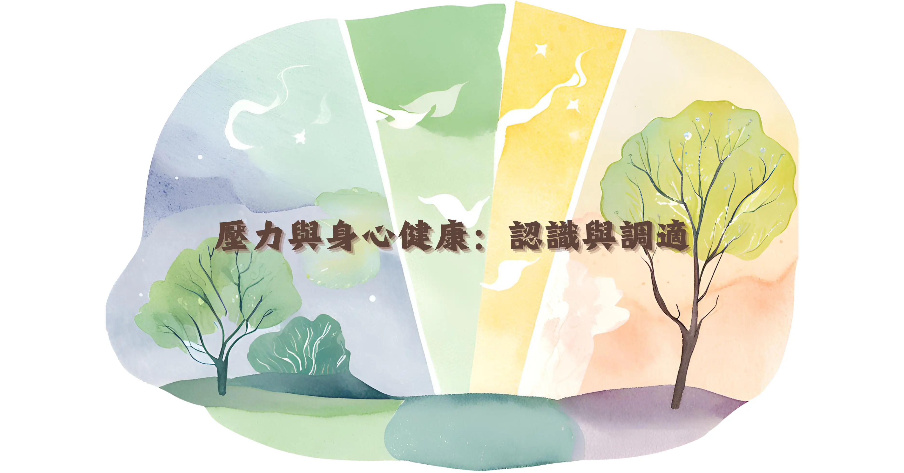

壓力與身心健康：認識與調適

什麼是壓力？
壓力是我們在面對生活中的挑戰、變化或威脅時，身心產生的自然反應。適度的壓力能夠激發我們的潛能，但過度的壓力則可能對健康造成負面影響。
壓力對身心的影響
當我們感到壓力時，身體會產生一系列反應：
- 身體反應：心跳加快、血壓上升、肌肉緊繃
- 情緒反應：焦慮、易怒、情緒波動
- 認知反應：注意力難以集中、記憶力下降
- 行為反應：睡眠品質差、飲食習慣改變
有效的壓力調適方法
1. 身體放鬆技巧
深呼吸練習、漸進式肌肉放鬆、瑜伽或其他運動，都能幫助身體放鬆，降低壓力反應。
2. 思維調整
學習辨識並挑戰負面思維模式，培養彈性思考的能力，有助於減輕心理壓力。
3. 生活習慣調整
保持規律的作息、均衡的飲食、適度的運動，都是維持身心健康的基礎。
4. 尋求支持
與親友分享心情、參加支持團體，或在需要時尋求專業協助，都是健康的因應方式。
結語
壓力管理是一項重要的生活技能。透過了解壓力的本質，學習適當的調適方法，我們能夠更好地維護自己的身心健康，面對生活中的各種挑戰。